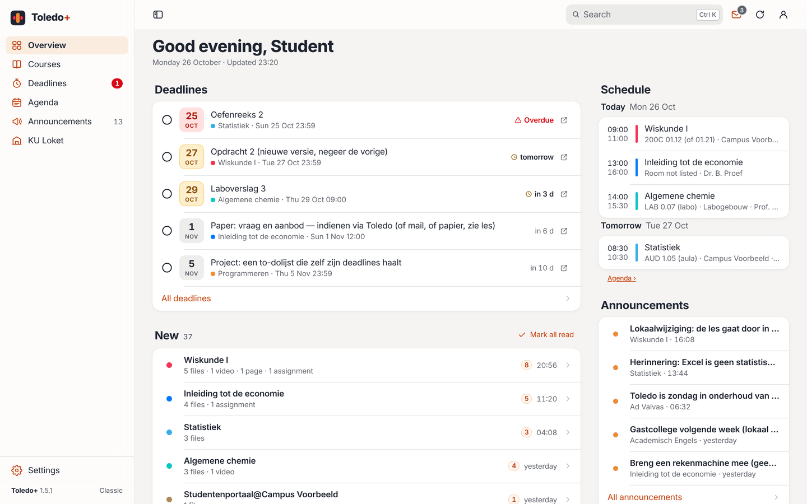
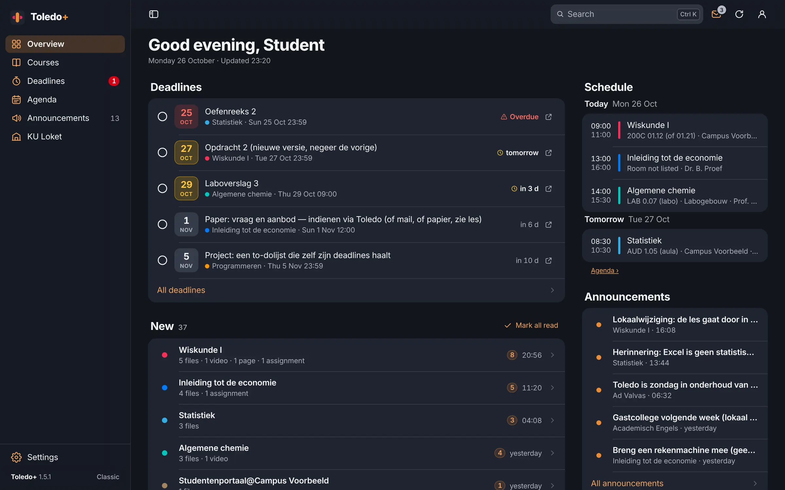

Free extension for Chrome and Edge
Toledo, but calm.
Your deadlines, new files, courses and timetable, clearly in one place. For students of KU Leuven and its association.
Version 1.5.1Free and open sourceUnofficial student project


Everything in one place.
Deadlines first
All deadlines in one list, with how much time you have left.
New, per course
What was added, summed up in one line per course.
Every course, tidy
All files and folders in one tree, with search and downloads.
Search everything
Find any document in all your courses with Ctrl K or ⌘ K. Even what’s inside: pdf, Word and PowerPoint, with the page number.
Your timetable
Your classes from KU Loket by day, week or month, next to your exams.
Your way
Nederlands, English or Français, light or dark, your own colours.
Install
Installed in a minute.
You install Toledo+ yourself, straight from GitHub.

Toledo+ 1.5.1
For Chrome, Edge, Brave, Arc, Opera and Vivaldi
Download the zip file
Click Download Toledo+ above.
Unzip it
Put the
toledo-plusfolder somewhere permanent, for example in Documents. Leave it there: your browser loads Toledo+ from that folder.Open the extensions page
Type
chrome://extensionsin the address bar (in Edge:edge://extensions).Turn on Developer mode
In Chrome the switch is at the top right, in Edge in the left column.
Choose “Load unpacked”
Select the
toledo-plusfolder (the one withmanifest.json). Then open Toledo and sign in as usual.
Which browser?
Chrome, Edge, Brave, Arc, Opera, Vivaldi Works, via the browser’s own extensions page.
Firefox and Safari Not supported yet: they use a different extension format.
Updating
Toledo+ tells you when a new version is out.
Download the new zip, replace the contents of your toledo-plus folder and click ↻ next to Toledo+ on the extensions page. Your settings are kept.
Does Chrome warn about extensions in developer mode at startup? That happens for every extension from outside the Chrome Web Store. You can simply close it.
Your data stays in your browser.
Toledo+ has no accounts and no trackers. Your courses, deadlines and files only travel between your browser and Toledo or KU Loket. Just one anonymous daily signal (random id, version, browser and language) tells us how many people use Toledo+; turn it off in Settings → About.
FAQ
Is this an official app?
No. Toledo+ is an independent student project, not affiliated with KU Leuven or the other institutions of its association. It simply uses your own Toledo session, just like your browser does.
Does it work for my school?
Toledo+ works wherever you use Toledo on toledo.kuleuven.be: KU Leuven and its association (including LUCA, UCLL, Thomas More, Odisee and VIVES). The timetable and exams come from KU Loket; without it, you see the schedule from Toledo. Something different for you? Let us know on GitHub.
Does it cost anything?
No. Toledo+ is free and open source (MIT licence). No ads, no subscription, no account.
Why isn’t it in the Chrome Web Store?
Toledo+ is distributed straight from GitHub. That way every new version is available right away and you can see exactly which code you install.
How do I turn it off or report a problem?
Choose Classic Toledo in the account menu at the top right to see the original page, or remove the extension on the extensions page. Report a problem or idea on GitHub; don’t include personal data.